Cuidamos el huerto de la clase y llevamos a la mesa lo que da la tierra.
[BORRADOR] Pendiente de revisión por el equipo docente.
Con el Diseño Universal para el Aprendizaje (DUA) y actividades en tres niveles.
Pictogramas: Sergio Palao. ARASAAC (Gobierno de Aragón). CC BY-NC-SA.
Licencia CC BY-NC-SA 4.0 ideducando.es
1
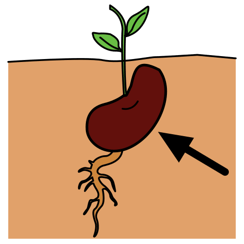
2
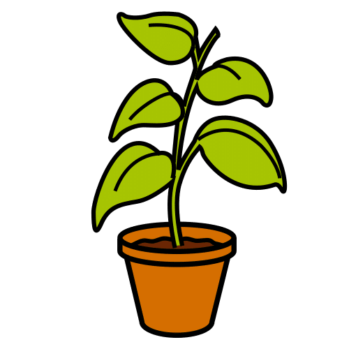
3
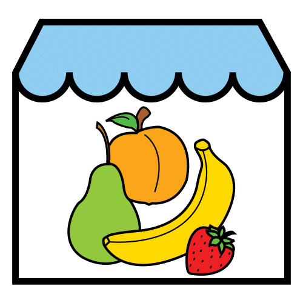
4
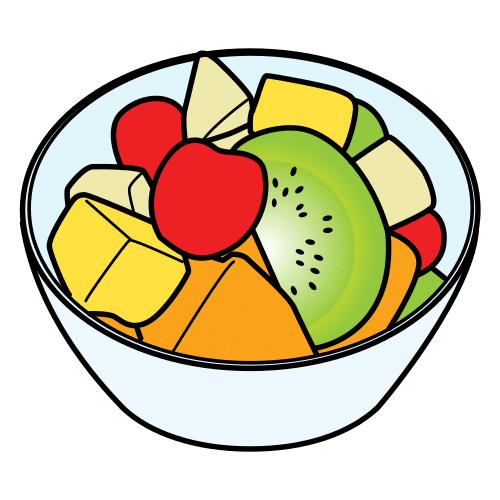
De un vistazo · Segundo curso del segundo ciclo de Infantil (4 años)
Pequeños hortelanos
El reto
«Nos ha llegado un sobre lleno de semillas: ¿qué necesitan para crecer y cómo llega a nuestra mesa lo que da la tierra?»
Producto final: el huerto de la clase (macetas o jardineras que el grupo cuida, con sus carteles), el
diario del huerto y un almuerzo saludable preparado por el grupo.
Curso y duración4 años. 8 sesiones de unos 40 minutos, en unas 3 semanas. El huerto sigue después.
Cómo se evalúaObservando, con el registro (página 16), el diario y la autoevaluación (página 30).
ÁreasCA Crecimiento en Armonía,DEE Descubrimiento y Exploración del Entorno y
CRR Comunicación y Representación de la Realidad.
Agrupamientos y espaciosAsamblea, parejas, pequeños grupos de 4 a 6 e individual. En el aula, junto a
una ventana, en el rincón del huerto o el patio y en el lavabo.
Qué van a aprender
Agrupar semillas y alimentos por su tamaño, su color, su forma o la parte de la planta que son.
Predecir qué necesita una semilla para brotar y comprobarlo cambiando una sola cosa.
Medir una planta con cubos o tiras de papel y registrarlo en un diario.
Plantar y cocinar siguiendo pasos con pictogramas, con higiene y con seguridad.
Usar números y cuantificadores al comprar, y contar a otros lo que han descubierto.
Antes de la sesión 1, consulta alergias e intolerancias con las familias (página 18) y en la ficha de
salud: las legumbres y el maíz también son alimentos. Alternativa segura, sin señalar a nadie.
Nada de frutos secos ni cacahuetes: la Agencia Española de Seguridad Alimentaria y Nutrición (AESAN)
pide evitarlos en menores de 5 años por el riesgo de asfixia.
Semillas con supervisión: nada a la boca ni a la nariz; los germinados no se comen. Manos con jabón tras tocar tierra.
Plantas no tóxicas: pregunta en el vivero.
Cuchillos de plástico de punta redonda, solo para fruta blanda; lo duro lo corta un adulto. Uvas, peladas, sin semillas y
en cuatro trozos a lo largo, como aconseja la Asociación Española de Pediatría (AEP).
1Un sobre misterioso
2¿Qué necesita una semilla?
3El diario del huerto Cuando brote la semilla
4¡A plantar!
5¿Qué parte de la planta me como?
6La frutería de la clase El día antes de la 7
7Cocinamos sano El mismo día que la 8
8Del huerto a la mesa Con el almuerzo
Cómo está pensada
Un huerto de verdad para toda la clase
Por qué este reto
A los 4 años, una semilla que brota despierta muchas preguntas. El anexo III del Decreto 196/2022 pide un reto «de cierta
complejidad» que movilice lo aprendido «en las tres áreas» y lo lleve a «la realidad cotidiana del niño». Aquí el grupo
investiga qué necesita una semilla y cuida su huerto hasta llevar a la mesa lo que da la tierra. Trabaja también la
alimentación sana y «la sostenibilidad», otro tema que el anexo pide abordar.
Las pautas DUA de esta situación
Tres principios. Cada número es una pauta (en la versión 3.0, «directriz») de CAST (2024).
Compromiso
7.2 Un huerto y un almuerzo de verdad: lo que hacen sirve para algo.
8.3 Cada pareja cuida su maceta; al final, el grupo se reparte las tareas.
9.3 La autoevaluación con pictogramas ayuda a pensar en lo aprendido.
Representación
2.1 Cada palabra nueva, con el objeto real, el pictograma y la palabra escrita.
2.5 Semillas, plantas y fruta de verdad, además de dibujos.
3.2 En el experimento solo cambia una cosa: así se ve qué importa.
Acción y expresión
4.1 Se responde señalando, pegando, rodeando, con el tablero o hablando.
5.2 Se mide con cubos o tiras y se registra con dibujos, marcas o números.
6.4 El diario deja ver cómo crece la planta y lo que avanza cada uno.
Los tres niveles de cada actividad
Toda la clase hace la misma actividad, a la vez y en el mismo sitio. Cambian el apoyo y la complejidad, nunca el tema. Los
niveles describen la tarea, no al niño o la niña.
1Con más apoyo
Modelo antes de cada paso, objetos reales, 2 opciones y ayuda física si la acepta. Vale señalar o usar el tablero.
2Base
Lo esperable a los 4 años: agrupa por un atributo, predice, mide con cubos y cuenta, sigue los pasos del cartel.
3Con más reto
Más elementos, explicar el porqué, comparar, proponer otra prueba o ayudar a su pareja.
Nadie tiene un nivel fijo: cada uno sube o baja dentro de la misma sesión, y en el registro se anota el nivel en que lo
logra. Cada sesión trae, además, ajustes para el alumnado con trastorno del espectro del autismo (TEA), trastorno por
déficit de atención e hiperactividad (TDAH) o trastorno del desarrollo del lenguaje (TDL), entre otros.
Si preparas la oposición
La convocatoria de Infantil de 2026 en la Región de Murcia (Boletín Oficial de la Región de Murcia, BORM, n.º 18, de 23 de
enero de 2026, anexo XVII) valora en la unidad didáctica, entre otros: pautas DUA y atención a la diversidad (0,4
puntos), una secuencia coherente y realista (0,3), agrupamientos variados (0,2), detección de dificultades (0,3),
criterios relacionados con competencias y saberes (0,3), momentos e instrumentos de evaluación (0,3) y evaluación de la
práctica docente (0,3). Los encontrarás en esta hoja, en las sesiones, en el currículo, en «Detectar a tiempo» y en la
evaluación. Úsala como modelo: tu programación y tu unidad tienen que ser originales; no entregues este material copiado.
Conexión con el currículo de la Región de Murcia
Qué trabaja del Decreto 196/2022
Decreto 196/2022, de 3 de noviembre (BORM n.º 255, de 4 de noviembre de 2022). Criterios y saberes del segundo ciclo, con
su texto literal. CA, DEE y CRR son abreviaturas nuestras de las tres áreas.
Área
Competencia específica
Criterios de evaluación
Saberes básicos
Crecimiento en Armonía (CA)págs. 33078 y 33083 a 33086
1. Progresar en el conocimiento y control de su cuerpo y en la adquisición de distintas estrategias, adecuando sus
acciones a la realidad del entorno de una manera segura, para construir una autoimagen ajustada y positiva.
1.3 Manejar diferentes objetos, útiles y herramientas en situaciones de juego y en la
realización de tareas cotidianas, mostrando un control progresivo y de coordinación de movimientos de carácter fino.
A. Dominio activo del tono y la postura en función de las características de los objetos,
acciones y situaciones. Progresiva autonomía en la realización de tareas.
Crecimiento en Armonía (CA)
3. Adoptar modelos, normas y hábitos, desarrollando la confianza en sus posibilidades y sentimientos de logro, para
promover un estilo de vida saludable y ecosocialmente responsable.
3.1 Realizar actividades relacionadas con el autocuidado y el cuidado del entorno con una
actitud respetuosa, mostrando autoconfianza e iniciativa.
C. Hábitos y prácticas sostenibles y ecosocialmente responsables relacionados con la
alimentación, la higiene, el descanso, el autocuidado y el cuidado del entorno. Identificación de situaciones
peligrosas, en escenarios de la vida cotidiana, y prevención de accidentes.
Descubrimiento y Exploración del Entorno (DEE)págs. 33090, 33091 y 33094 a 33097
1. Identificar las características de materiales, objetos y colecciones y establecer relaciones entre ellos, mediante
la exploración, la manipulación sensorial, el manejo de herramientas sencillas, y el desarrollo de destrezas
lógico-matemáticas para descubrir y crear una idea cada vez más compleja del mundo.
1.1 Establecer distintas relaciones entre los objetos a partir de sus cualidades o
atributos, mostrando curiosidad e interés.
1.2 Emplear los cuantificadores básicos más significativos en el contexto del juego y en
la interacción con los demás.
1.4 Identificar las situaciones cotidianas en las que es preciso medir, utilizando el
cuerpo u otros materiales y herramientas para efectuar las medidas.
1.5 Organizar su actividad, ordenando las secuencias y utilizando las nociones temporales
básicas.
A. Cualidades o atributos de objetos y materiales. Relaciones de orden, correspondencia,
clasificación y comparación. Cuantificadores básicos contextualizados: muchos-pocos, unos-algunos-varios, más
que-menos que, todos-ninguno... Funcionalidad de los números en la vida cotidiana. Situaciones en que se hace necesario
medir. Diferentes herramientas de medida convencionales (regla, metro, balanzas, recipientes...) y no convencionales
(pasos, pies, cuerdas, piedras...). El tiempo y su organización: día-noche, estaciones, ciclos, calendario...
Descubrimiento y Exploración del Entorno (DEE)
2. Desarrollar, de manera progresiva, los procedimientos del método científico y las destrezas del pensamiento
computacional, a través de procesos de observación y manipulación de objetos, para iniciarse en la interpretación del
entorno y responder de forma creativa a las situaciones y retos que se plantean.
2.3 Plantear hipótesis acerca del comportamiento de ciertos elementos o materiales,
verificándolas a través de la manipulación y la actuación sobre ellos.
2.6 Participar en proyectos utilizando dinámicas cooperativas, compartiendo y valorando
opiniones propias y ajenas, y expresando conclusiones personales a partir de ellas.
B. Modelo de control de variables. Estrategias y técnicas de investigación: ensayo-error,
observación, experimentación, formulación y comprobación de hipótesis, realización de preguntas, manejo y búsqueda en
distintas fuentes de información. Procesos y resultados. Hallazgos, verificación y conclusiones.
Descubrimiento y Exploración del Entorno (DEE)
3. Reconocer elementos y fenómenos de la naturaleza, mostrando interés por los hábitos que inciden sobre ella, para
apreciar la importancia del uso sostenible, el cuidado y la conservación del entorno en la vida de las personas.
3.1 Mostrar una actitud de respeto, cuidado y protección hacia el medio natural y los
animales, identificando el impacto positivo o negativo que algunas acciones humanas ejercen sobre ellos.
C. Experimentación con elementos naturales (agua, tierra, piedras, ramas, arena, hojas).
Iniciativa en el compromiso de aceptar pequeñas responsabilidades relacionadas con el cuidado y la conservación de
animales y plantas. Características generales de los seres vivos.
Comunicación y Representación de la Realidad (CRR)págs. 33102 a 33104 y 33107 a 33110
3. Producir mensajes de manera eficaz, personal y creativa, utilizando diferentes lenguajes, descubriendo los códigos de
cada uno de ellos y explorando sus posibilidades expresivas, para responder a diferentes necesidades comunicativas.
3.1 Hacer un uso funcional del lenguaje oral, aumentando su repertorio lingüístico y
construyendo progresivamente un discurso más eficaz, organizado y coherente en contextos formales e informales.
C. El lenguaje oral en situaciones cotidianas: conversaciones, juegos de interacción social
y expresión de vivencias. Verbalización de la secuencia de acciones en una acción planificada.
Comunicación y Representación de la Realidad (CRR)
4. Participar por iniciativa propia en actividades relacionadas con textos escritos, mostrando interés y curiosidad,
para comprender su funcionalidad y algunas de sus características.
4.1 Mostrar interés por comunicarse a través de códigos escritos, convencionales o no,
valorando su función comunicativa.
4.2 Identificar, de manera acompañada, alguna de las características textuales y
paratextuales mediante la indagación en textos de uso social libres de prejuicios y estereotipos sexistas.
D. Los usos sociales de la lectura y la escritura. Funcionalidad y significatividad en
situaciones comunicativas. Aproximación al código escrito desde las escrituras indeterminadas. Otros códigos de
representación gráfica: imágenes, símbolos, números…
Objetivos de etapa (art. 7)
b) Observar y explorar su entorno: semillas y plantas.
c) Autonomía: lavarse las manos, regar y cocinar.
e) Relacionarse en igualdad: parejas y turnos.
f) Habilidades comunicativas: hablan, dibujan y presentan.
g) Habilidades lógico-matemáticas, lectura y escritura: miden, cuentan y escriben su nombre.
Competencias clave (anexo I)
Comunicación lingüística (CCL): explican, piden y leen.
Matemática y en ciencia, tecnología e ingeniería (STEM): miden, cuentan y comprueban hipótesis.
Personal, social y de aprender a aprender (CPSAA): higiene, cooperación y autoevaluación.
Ciudadana (CC): cuidan un ser vivo para el grupo.
Emprendedora (CE): planifican el huerto y la frutería.
Conciencia y expresión culturales (CCEC): dibujan lo que observan.
Sesión1
Un sobre misterioso
Duración: 40 minutosGrupo: asamblea y pequeños gruposEspacio: asamblea y mesas
Para qué: explorar semillas, agruparlas por su tamaño, su color o su forma y decir qué creemos que necesitan
para crecer.
DEE 1.1DEE 2.3CRR 3.1 Materiales: un sobre grande con semillas y una carta corta; por mesa, una bandeja con semillas grandes
(alubias, garbanzos, maíz, pipas de calabaza y un hueso de aguacate) y unas pocas lentejas, 2 platos y 1 lupa; papel
continuo; tarjetas de la agenda (página 19). Nada de frutos secos ni cacahuetes.
Inicio 8 minutos
Antes, revisa las alergias: las legumbres y el maíz son alimentos. Pon en la
agenda visual las tarjetas asamblea,
semillas, agrupar y recoger. Abre el sobre despacio, saca un puñado de semillas y lee la carta: «Son semillas. Si las
cuidáis, os darán comida. ¿Qué necesitan para crecer? Firmado: una hortelana».
Desarrollo 25 minutos
Exploramos. Cada mesa recibe su bandeja: miran con la lupa, tocan y comparan. Norma: «Las semillas no
van a la boca ni a la nariz». Quien aún se lleva cosas a la boca las explora dentro de una botella transparente cerrada.
Hacemos grupos. Cada mesa separa sus semillas en dos platos con una regla que decide el grupo: grandes y
pequeñas, oscuras y claras, redondas y alargadas.
Nuestras ideas. En asamblea: «¿Qué necesita una semilla para crecer?». Apunta cada idea en papel
continuo con un dibujo. Es la evaluación inicial: guarda el mural.
1Con más apoyo
Separa 2 semillas muy distintas (alubia y lenteja) en «grande» y «pequeño», con el modelo de la maestra.
2Base
Separa todas las semillas de su bandeja con una regla (tamaño, color o forma) y dice cuál ha usado.
3Con más reto
Agrupa con una regla y luego con otra, ordena de la más grande a la más pequeña y explica su idea con «porque».
Cierre 7 minutos
Cada mesa enseña sus platos: «Aquí, las grandes; aquí, las pequeñas». Contad las semillas grandes al recoger y lavaos las
manos. Anticipa: «En la próxima sesión comprobamos si tenéis razón».
DUA en esta sesión
7.3 El sobre misterioso convierte la exploración en un juego.
2.5 Las semillas llegan por la vista, el tacto, la lupa y la palabra.
4.1 Se responde separando, señalando, con el tablero o hablando.
Qué observar
DEE 1.1 ¿Agrupa las semillas con una regla? ¿Cuál? ¿En qué nivel?
DEE 2.3 ¿Propone qué necesita una semilla? Es su idea de partida.
CRR 3.1 ¿Explica su idea con una frase?
Ajustes
TEA: anticipa el sobre con la agenda y deja que mire antes de tocar; si la textura le molesta, una cuchara.
TDL: «grande» y «pequeño» con gesto y pictograma. Amplía: «Grande. Sí, la alubia es grande».
Visual: semillas grandes sobre un plato que contraste y lupa con buena luz.
Motora: bandeja con borde y semillas que se cogen con la mano entera.
Sesión2
¿Qué necesita una semilla?
Duración: 40 minutosGrupo: asamblea, pequeños grupos e individualEspacio: asamblea, mesas y una ventana
Para qué: predecir si una semilla brotará con agua o sin agua, con luz o a oscuras, y preparar una prueba en
la que solo cambia una cosa.
DEE 2.3DEE 2.6CRR 3.1 Materiales: por mesa, 3 vasos transparentes numerados del 1 al 3, algodón, 18 lentejas o judías (6
por vaso), un pulverizador o una cuchara y agua; una caja de cartón para tapar los vasos 3; la hoja de predicciones (página
20), una por alumno o alumna; ceras.
Inicio 5 minutos
Agenda: asamblea, experimento, pausa activa y lavar las manos. Leed el mural de la sesión 1 y elegid dos ideas para
comprobar: «¿Necesita agua? ¿Necesita luz?». Explica la idea clave con las manos: «Para que la prueba sea justa, solo
cambiamos una cosa».
Desarrollo 28 minutos
El modelo. Prepara tú tres vasos delante del grupo. Vaso 1: algodón mojado, a la luz. Vaso 2: algodón
seco, a la luz (solo cambia el agua). Vaso 3: algodón mojado, a oscuras dentro de la caja (solo cambia la luz).
Cada mesa prepara los suyos. Se reparten el trabajo: quien pone el algodón, quien cuenta 6 semillas y
quien moja. Así hay varios vasos de cada tipo, como en un experimento de verdad. Lo que brote es para mirar: no se come.
Predecimos. En la hoja de predicciones, cada uno rodea «sí» o «no» en cada vaso: «¿Brotará?».
1Con más apoyo
Predice los vasos 1 y 2 eligiendo entre dos tarjetas, «sí» y «no», que le enseña la maestra. Vale señalar.
2Base
Predice los tres vasos y lo marca en su hoja.
3Con más reto
Explica por qué («porque no tiene agua») y propone otra prueba en la que solo cambie una cosa.
Cierre 7 minutos
Pausa activa «La flor» (carta 8 de las
pausas activas): somos
semillas que crecen despacio. Decidid quién moja cada día los vasos 1 y 3: un poco, sin hacer charco, porque la semilla
también necesita aire. El vaso 2 nunca se moja. Lavaos las manos.
DUA en esta sesión
8.1 La meta se dice al principio y se repite: comprobar qué necesita una semilla.
3.2 Solo cambia una cosa en cada vaso, y lo marcan el número y el pictograma.
5.1 La predicción se dice, se señala o se rodea.
Qué observar
DEE 2.3 ¿Predice qué pasará en cada vaso? ¿En qué nivel?
DEE 2.6 ¿Hace su parte del trabajo en la mesa y escucha a los demás?
CRR 3.1 ¿Explica su predicción con una frase?
Ajustes
TDAH: dale el pulverizador o el reparto del algodón: una tarea con movimiento y con un final claro.
Discapacidad intelectual: un vaso cada vez, con el vaso de la maestra al lado como modelo.
Auditiva: pon los vasos en fila y señala lo que cambia en cada uno.
Altas capacidades: que diseñe una cuarta prueba (¿y con frío?) y diga qué cambia.
Sesión3
El diario del huerto
Duración: 40 minutosGrupo: asamblea, parejas e individualEspacio: asamblea y mesas
Cuándo: en pocos días, cuando hayan brotado las semillas de los vasos 1.
Para qué: comprobar las predicciones, medir lo que ha crecido con cubos o tiras de papel y empezar el diario
del huerto.
DEE 2.3DEE 1.4CRR 4.1 Materiales: los vasos de todas las mesas y las hojas de predicciones; unos 20 cubos encajables por
pareja; tiras de papel y tijeras para el adulto; el diario (páginas 21 y 22) grapado, uno por alumno o alumna; lápices de
colores, pegamento y lupas.
Inicio 7 minutos
Agenda: asamblea, mirar, medir, dibujar y recoger. Saca los vasos 3 de la caja y pon los de todas las mesas en fila: 1, 2 y 3.
«¿Qué ha pasado?». Deja que miren con la lupa, sin tocar.
Desarrollo 26 minutos
Comprobamos. Vaso a vaso, cada uno rodea en su hoja lo que ha pasado. Lo esperable: el vaso 2, seco, no
ha brotado; en el 1 y en el 3 sí, pero las plantitas del 3, a oscuras, salen pálidas y más largas. Escribe en el mural la
conclusión del grupo: «Para brotar, la semilla necesita agua. Para ponerse verde, necesita luz».
Medimos. Por parejas, miden con cubos la plantita más alta de un vaso 1 y la de un vaso 3: «¿Cuántos
cubos mide? ¿Cuál es más alta?».
Primera página del diario. Cada uno rodea el día, dibuja la planta y colorea un cuadro por cada cubo.
1Con más apoyo
Pega en el diario una tira de papel que el adulto corta a la altura de la planta y colorea los cuadros con ayuda.
2Base
Mide con cubos, los cuenta y colorea tantos cuadros como cubos.
3Con más reto
Mide las dos plantitas, dice cuál es más alta y por cuántos cubos, y escribe el número.
Cierre 7 minutos
Poned los vasos 3 a la luz: «¿Se pondrán verdes?». Es una nueva predicción para los próximos días. Cada uno guarda su
diario en la caja del huerto y se lava las manos. Desde hoy, el diario se rellena dos o tres veces por semana.
DUA en esta sesión
3.1 Se parte de lo que predijeron: el mural y su hoja.
5.2 Se mide con cubos o con tiras y se registra dibujando, coloreando o escribiendo.
6.4 El diario deja ver cómo crece la planta día a día.
Qué observar
DEE 2.3 ¿Compara lo que pensaba con lo que ha pasado?
DEE 1.4 ¿Mide con cubos o tiras y cuenta? ¿En qué nivel?
CRR 4.1 ¿Registra con dibujos, marcas o números?
Ajustes
Discapacidad intelectual: dale una torre de cubos ya hecha para que la compare con la planta.
Motora: cubos grandes de construcción o la tira de papel; ceras gruesas para colorear.
Visual: cubos de un color que contraste con la planta y cuadros de borde grueso.
TDL: «alto», «bajo» y «más» con gesto, siempre en la misma frase: «Mide 3 cubos».
Sesión4
¡A plantar!
Duración: 40 minutosGrupo: parejasEspacio: patio o mesas cubiertas con papel de periódico
Para qué: plantar una maceta en pareja siguiendo los pasos con pictogramas y escribir el cartel con el
nombre.
DEE 1.5CA 1.3CRR 4.1DEE 3.1 Materiales: una maceta de 15 a 20 cm con agujero por pareja (o una jardinera para cada 3 parejas);
tierra para macetas; una plantita de vivero por pareja (lechuga, fresa, hierbabuena o perejil, de temporada y que no sea
tóxica: pregúntalo en el vivero); palas y regaderas pequeñas; la secuencia de plantar (página 23) en cartel y en tarjetas;
los carteles (página 24), palos de helado y cinta adhesiva transparente.
Inicio 5 minutos
Agenda: asamblea, plantar, regar, lavar las manos y pausa activa. Lee la secuencia del cartel señalando cada número: «primero…,
después…, al final…». Saca una plantita de su maceta: «Esta es la raíz. Va debajo de la tierra».
Desarrollo 28 minutos
Plantamos. Cada pareja sigue los pasos del cartel: tierra, agujero, plantita, tapar, regar, cartel y
manos. Un niño o una niña hace un paso y su pareja, el siguiente.
El cartel. Cada pareja escribe sus nombres en el cartel de su planta. Fórralo por las dos caras con
cinta adhesiva y pégalo al palo. Si habéis pasado a una maceta las plantitas del experimento, también llevan cartel: son
para mirar.
1Con más apoyo
Sigue el cartel con la maestra, que señala cada pictograma. En el cartel, pega su nombre impreso o hace su marca.
2Base
Sigue los pasos con su pareja mirando el cartel y copia su nombre en el cartel.
3Con más reto
Antes de empezar, ordena las tarjetas de los pasos y se los explica a su pareja: «primero, después, al final».
Cierre 7 minutos
Todos se lavan las manos con jabón: hemos tocado tierra. Después, pausa activa «Lluvia suave» (carta 5): la lluvia cae,
con la punta de los dedos, por la cabeza y los brazos. Acordad la norma del riego: «Toco la tierra con el dedo. Si está
seca, riego un poco».
DUA en esta sesión
6.3 La secuencia con números y pictogramas organiza la tarea.
8.3 La pareja se reparte los pasos y se ayuda.
4.2 Palas de mango grueso y la maceta a la altura de cada uno.
Qué observar
DEE 1.5 ¿Sigue los pasos en orden? ¿Los ordena él o ella?
CA 1.3 ¿Maneja la pala y la regadera con control?
CRR 4.1 ¿Escribe o marca su nombre en el cartel?
Ajustes
TDAH: que riegue y lleve las macetas a su sitio: tareas con movimiento.
Motora: maceta sobre un salvamanteles antideslizante, a la altura de la silla; tierra en un cuenco.
TEA: si la tierra le molesta, guantes o pala. Nadie le obliga a tocarla.
Recién llegados: la secuencia de pictogramas y el gesto bastan para seguir la tarea.
Sesión5
¿Qué parte de la planta me como?
Duración: 40 minutosGrupo: asamblea y pequeños gruposEspacio: asamblea y mesas
Para qué: reconocer raíz, tallo, hoja, flor, fruto y semilla, y relacionar alimentos de verdad con la parte
de la planta que son.
DEE 1.1CRR 3.1 Materiales: una plantita de lechuga con raíz o una zanahoria con hojas; por mesa, una bandeja con 1
zanahoria, 2 espárragos verdes, 1 lechuga pequeña, 1 trozo de brócoli, 1 tomate y un puñado de lentejas; las tarjetas de las
partes de la planta (página 25).
Inicio 7 minutos
Agenda: asamblea, la planta, pausa activa y lavar las manos. Enseña la plantita con raíz y nombra sus partes
con las tarjetas: raíz, tallo y hoja. Abre el tomate: «Esto es el fruto. Dentro guarda las semillas». Con el brócoli: «Nos
comemos sus flores, antes de que se abran».
Desarrollo 25 minutos
Las bandejas. Cada mesa mira, toca y huele sus alimentos. Hoy no se prueban.
¿Qué parte es? Con las 6 tarjetas sobre la mesa, el grupo coloca cada alimento en su parte: la
zanahoria, en la raíz; los espárragos, en el tallo; la lechuga, en la hoja; el brócoli, en la flor; el tomate, en el
fruto; las lentejas, en la semilla.
Lo contamos. En asamblea, cada mesa dice una pareja: «La zanahoria es una raíz».
1Con más apoyo
Relaciona 2 alimentos con 2 partes (zanahoria y raíz, lechuga y hoja), con la planta de verdad delante como modelo.
2Base
Coloca los 6 alimentos en su parte y lo dice.
3Con más reto
Explica cómo lo sabe («crece debajo de la tierra») y busca otro ejemplo: el rábano también es una raíz.
Cierre 8 minutos
Pausa activa «El árbol en el viento» (carta 6): los pies son raíces y los brazos, ramas. Resumid juntos: «Comemos raíces,
tallos, hojas, flores, frutos y semillas». Propuesta para casa: buscar un alimento de cada parte (página 18). Lavaos las
manos.
DUA en esta sesión
2.1 Cada palabra nueva llega con el alimento, el pictograma y la palabra escrita.
1.2 Se percibe con la vista, el tacto y el olfato.
3.4 En casa buscan más ejemplos: lo aprendido sale del aula.
Qué observar
DEE 1.1 ¿Relaciona cada alimento con su parte? ¿En qué nivel?
CRR 3.1 ¿Dice la pareja con una frase completa?
Ajustes
TDL: usa siempre la misma frase modelo: «La ___ es una ___».
Visual: alimentos de verdad para tocar y tarjetas ampliadas.
Discapacidad intelectual: empieza con raíz y hoja; añade una parte nueva cuando las domine.
Altas capacidades: que clasifique su almuerzo de hoy por partes de la planta.
Sesión6
La frutería de la clase
Duración: 40 minutosGrupo: pequeños grupos (4 tiendas)Espacio: aula con 4 mesas de tienda
Cuándo: el día antes de la sesión 7. Así, la fruta de verdad que se «compra» es la de la receta.
Para qué: comprar y vender usando números y cuantificadores («muchos», «pocos», «más», «menos»,
«ninguno») en el juego.
DEE 1.2CRR 3.1 Materiales: 4 mesas de tienda con fruta y verdura de juguete y, si las alergias lo permiten, la fruta
de verdad de la receta; cestas o bolsas; precios y lista de la compra (página 27); 70 fichas (página 26), 5 por cliente; un
temporizador; el
tablero de comunicación.
Inicio 7 minutos
Agenda: asamblea, frutería y recoger. «¿Cómo llega la fruta a nuestra mesa? Del huerto a la frutería, y de la frutería a
casa». Haz de frutera con un niño o una niña delante del grupo: «Hola, quiero 2 plátanos». «Son 2 fichas». Contad juntos
las fichas al pagar.
Desarrollo 25 minutos
Las tiendas. En cada mesa hay 2 vendedores y 4 clientes. Cada cliente tiene 5 fichas y una tarjeta de
la lista de la compra.
Compramos. El cliente pide, paga contando las fichas y da las gracias. Cuando suena el temporizador,
cambian de papel.
Preguntas con cuantificadores. Pasa por las mesas: «¿Te quedan muchas fichas o pocas?», «¿Quién tiene
más fresas?», «¿Quedan plátanos? No, ninguno».
1Con más apoyo
Compra 1 cosa que cuesta 1 ficha. Pide señalando o con el tablero: «quiero» y la fruta.
2Base
Compra lo de su tarjeta (hasta 3 fichas) y cuenta las fichas al pagar.
3Con más reto
Compra dos cosas de precios distintos, cuenta cuántas fichas le quedan y compara: «Me quedan más que a ti».
Cierre 8 minutos
Recoged las tiendas. «¿Qué tienda ha vendido más? ¿Cuál menos?». Guardad en un sitio fresco la fruta de verdad para la
receta de mañana. Lavaos las manos.
DUA en esta sesión
7.2 Una compra con sentido: la fruta es la de la receta de mañana.
7.3 El juego simbólico mantiene el interés.
2.2 Los precios llevan número y puntos para contar.
Qué observar
DEE 1.2 ¿Usa «muchos», «pocos», «más», «menos» o «ninguno» al jugar? ¿En qué nivel?
CRR 3.1 ¿Pide, saluda y da las gracias? ¿Con qué apoyo?
Ajustes
TEA: guion visual de la compra (hola, quiero, toma, gracias) con el tablero; si le da seguridad, que empiece vendiendo.
TDAH: el temporizador marca los cambios de papel; que reparta las fichas.
Auditiva: los precios se ven: número y puntos. Habla de cara y con gestos.
Recién llegados: vale pedir señalando y contar con los dedos.
Sesión7
Cocinamos sano
Duración: 40 minutosGrupo: pequeños grupos de 5, con un adulto si es posibleEspacio: mesas y lavabo
Cuándo: el mismo día que la sesión 8, antes del almuerzo.
Para qué: preparar una macedonia siguiendo una receta con pictogramas, con higiene y con seguridad.
CA 3.1CA 1.3CRR 4.2DEE 1.5 Materiales: la receta (página 28) en cartel; por mesa, un barreño con agua, un bol grande, platos
llanos, cuchillos de plástico de punta redonda, una cuchara grande y papel de cocina; fruta blanda y madura de temporada
(plátano, pera, kiwi, fresa, mandarina) para el grupo y los invitados; vasos y cucharillas; un paño limpio para tapar.
Inicio 6 minutos
Repasa antes la lista de alergias y deja preparada una alternativa segura, sin señalar a nadie. Agenda: lavar las manos, lavar
la fruta, receta y recoger. Lee la receta del cartel: «¿Cómo se llama? ¿Qué necesitamos? ¿Qué número va primero?».
Señala el título, la lista de lo que necesitamos y los pasos con número.
Desarrollo 27 minutos
Manos y fruta. Todos se lavan las manos con jabón. Cada mesa lava su fruta en el barreño y la seca.
Pelamos y cortamos. Pelan plátanos y mandarinas (el kiwi lo pela un adulto) y cortan la fruta blanda en
trozos pequeños con el cuchillo de punta redonda, sobre el plato. Lo duro lo corta el adulto. Si hay uvas, el adulto las
pela, les quita las semillas y las corta en cuatro trozos a lo largo.
Mezclamos y guardamos. Todo al bol, se mezcla con la cuchara y se tapa para el almuerzo.
1Con más apoyo
Pela el plátano y lo corta con la mano del adulto encima, si la acepta, o lo parte con los dedos. Señala cada paso en la receta.
2Base
Corta plátano, pera y kiwi y sigue los pasos mirando la receta.
3Con más reto
«Lee» la receta a su mesa por los números, comprueba si falta algo y ayuda a otro a cortar.
Cierre 7 minutos
Recoged y limpiad las mesas. «¿Qué parte de la planta hemos usado? ¡Frutos!». Lavaos las manos. Si el cole tiene nevera,
guarda allí los boles tapados hasta el almuerzo.
DUA en esta sesión
6.2 La receta anticipa todos los pasos antes de empezar.
7.4 Las normas de seguridad se repasan con pictogramas y sin señalar a nadie.
1.1 La receta en grande, a la vista desde todas las mesas.
Qué observar
CA 3.1 ¿Se lava las manos y lava la fruta sin que se lo recuerden?
CA 1.3 ¿Corta con control con el cuchillo de plástico? ¿En qué nivel?
CRR 4.2 ¿Reconoce el título, la lista o los números de los pasos?
Ajustes
Motora: plátano ya pelado y empezado, y plato sobre un salvamanteles antideslizante.
TDAH: que se encargue del barreño o de repartir los vasos; un paso cada vez.
Visual: receta ampliada y fruta de colores vivos sobre un plato oscuro.
Discapacidad intelectual: solo plátano, con el modelo del adulto al lado.
Sesión8
Del huerto a la mesa
Duración: 40 minutos y el almuerzoGrupo: gran grupo, parejas y pequeños gruposEspacio: aula y rincón del huerto
Para qué: enseñar el huerto y el diario a otra clase o a las familias, compartir el almuerzo, valorar lo
aprendido y repartir el cuidado del huerto.
DEE 2.6DEE 3.1CRR 3.1CA 3.1 Materiales: las macetas, los diarios, los vasos y las hojas de predicciones; la macedonia de la sesión
7, vasos, cucharillas y agua; la autoevaluación (página 30), una por alumno o alumna; el cuadrante del huerto (página 29).
Inicio 5 minutos
Antes, pregunta a la tutora de la clase invitada, o a las familias que vengan, por sus alergias e intolerancias. Agenda:
enseñar, almuerzo, hablar y huerto. Reparte los papeles: guías (cada pareja, junto a su maceta), quienes explican el
experimento y quienes sirven el almuerzo.
Desarrollo 25 minutos
La visita. Los invitados pasan por las macetas. Cada pareja enseña su planta, su cartel y su diario. Un
grupo explica el experimento con los vasos 1, 2 y 3 y las hojas de predicciones.
El almuerzo compartido. Sentados y con calma, se sirve la macedonia en vasos y agua para beber. «¿Qué
parte de la planta nos estamos comiendo?». Hablad de por qué es un almuerzo sano: fruta fresca de temporada en vez de
zumo, y agua para beber.
1Con más apoyo
Enseña su maceta y señala su cartel o su diario. Puede decir una palabra o usar el tablero.
2Base
Explica con una frase qué ha hecho: «Plantamos una lechuga y la regamos».
3Con más reto
Explica el experimento con «porque» y responde a las preguntas de los invitados.
Cierre 10 minutos
Cuando se vayan los invitados, autoevaluación en pequeños grupos (página 30): lee cada frase y cada uno rodea su respuesta.
Después, en asamblea, el cuadrante del huerto (página 29): cada niño o niña elige una tarea para la semana. El huerto
sigue, y el diario también.
DUA en esta sesión
8.4 Invitar a otros hace del huerto algo de toda la comunidad.
9.3 La autoevaluación con pictogramas ayuda a pensar en lo aprendido.
5.1 Se explica hablando, señalando o enseñando el diario.
Qué observar
DEE 2.6 ¿Cuenta lo que ha descubierto el grupo? ¿En qué nivel?
DEE 3.1 ¿Elige una tarea de cuidado y la cumple los días siguientes?
CRR 3.1 ¿Explica a los invitados con frases ordenadas?
Ajustes
TEA: anticipa la visita con una historia de
«Días distintos» y dale
un papel con guion: enseñar su cartel.
TDL: una tarjeta con la frase modelo: «Esta es mi ___. La riego».
Auditiva: invitados en semicírculo y de cara; apóyate en el diario.
Altas capacidades: que presente el experimento y responda a las preguntas.
Evaluación
Observar para ajustar
En Infantil, la evaluación es «global, continua y formativa», y su técnica principal es «la observación directa y
sistemática» (art. 14.1 del Decreto 196/2022).
Cuándo y con qué
Inicial · sesión 1Cómo agrupan las semillas y qué creen que necesitan para crecer: el mural de ideas.
Continua · sesiones 2 a 7Registro del grupo (página 16), hoja de predicciones (página 20) y diario del huerto
(páginas 21 y 22).
Final · sesión 8Lo que cuentan a los invitados, la autoevaluación (página 30) y el registro completo.
En cada sesión, el apartado «Qué observar» dice qué mirar y con qué criterio. Anótalo en el registro con la marca y el nivel
en que lo logra. Un mismo niño o niña puede lograrlo en el nivel ① un día y en el ② la semana siguiente: eso es progreso.
La autoevaluación del alumnado
En la sesión 8, en grupos de 4 o 5. Lee cada frase de la hoja (página 30) y enseña las tres respuestas. Cada niño o niña
rodea la suya o pega un gomet. Nadie elige por otro. Ninguna respuesta es mala: «quiero practicar más» también vale, porque
marca una meta.
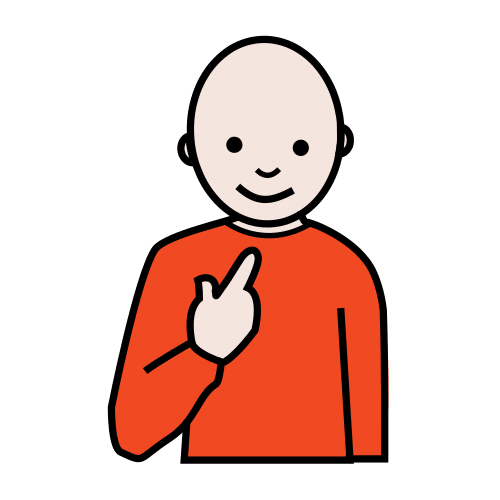
Lo he hecho yo
Con ayuda
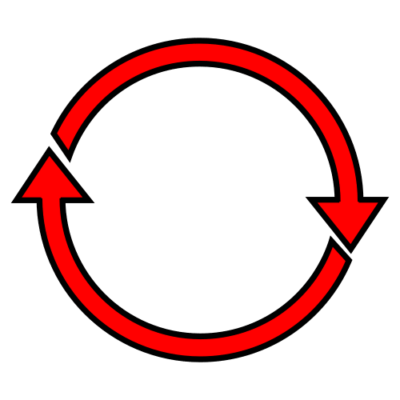
Quiero practicar más
Evalúo mi práctica
Todo el profesorado evalúa su propia práctica (art. 14.3). Al terminar, marca lo que se ha cumplido:
El reto ha mantenido el interés del grupo hasta la sesión 8.
Las sesiones han cabido en unos 40 minutos. Si no, sé qué parte acortar.
Toda la clase ha hecho la misma actividad, a la vez, con el apoyo que necesitaba cada uno.
He cambiado de nivel a alguien dentro de la sesión al ver que lo necesitaba.
He dado varias formas de responder: señalar, pegar, dibujar, decir.
Se han cumplido siempre las normas de seguridad: alergias, semillas, manos y cuchillos.
He anotado a todo el grupo en el registro, también a quien participa menos.
Las familias han sabido qué hacíamos y han podido participar.
Lo que cambiaré la próxima vez:
Evaluación · Registro del grupo
Pequeños hortelanos: qué observo en cada criterio
Leyenda: ✓ lo hace solo · ~ con ayuda · · aún no. Al lado, el nivel en que lo logra:
123.
Escribe solo el nombre o las iniciales y guarda la hoja en el centro.
N.º
Nombre
CA 1.3Usa pala, regadera y cuchilloSesiones 4 y 7
CA 3.1Se lava las manos y cuida su seguridadSesiones 7 y 8
DEE 1.1Agrupa y relaciona por atributosSesiones 1 y 5
DEE 1.2Usa muchos, pocos, más, menosSesión 6
DEE 1.4Mide con cubos o tirasSesión 3
DEE 1.5Sigue u ordena los pasosSesiones 4 y 7
DEE 2.3Predice y compruebaSesiones 1 a 3
DEE 2.6Coopera y cuenta lo descubiertoSesiones 2 y 8
DEE 3.1Cuida la plantaSesiones 4 y 8
CRR 3.1Explica con frasesSesiones 1, 5, 6 y 8
CRR 4.1Escribe o marca en cartel y diarioSesiones 3 y 4
CRR 4.2Reconoce partes de la recetaSesión 7
Atención a la diversidad
Si en tu clase hay…
Dos medidas de esta situación para cada caso. Se describe lo que ayuda, sin etiquetas: muchas sirven a toda la clase.
Si en tu clase hay alumnado con…
En esta situación
TEA
Anticipa cada sesión con la agenda y enseña antes lo nuevo: el algodón, la tierra, la fruta. Nadie le obliga a tocar.
En la frutería y en la visita, un guion visual con el tablero de comunicación: hola, quiero, toma, gracias.
TDAH
Tareas con movimiento y final claro: regar, repartir bandejas, llevar los vasos.
Pasos cortos con la secuencia a la vista, temporizador y una pausa activa entre fases.
TDL
Las palabras clave (semilla, raíz, tallo, hoja…) siempre con objeto, pictograma y palabra, en todas las sesiones.
Frases modelo cortas y repetidas; amplía lo que dice: «Raíz». «Sí, la zanahoria es una raíz».
Discapacidad intelectual
Menos elementos y más repeticiones: 2 semillas, 2 partes de la planta, solo plátano en la receta.
Modelo del adulto antes de cada paso y ayuda física que se retira poco a poco.
Discapacidad motora
Mesa y maceta a la altura de la silla de ruedas, superficies antideslizantes y palas de mango grueso.
Responder señalando o con la mirada; cubos grandes o la tira de papel para medir.
Discapacidad visual
Semillas grandes y alimentos de verdad para explorar con las manos, sobre fondos que contrasten.
Pictogramas ampliados y cuadros del diario con borde grueso; gomets en relieve para marcar.
Discapacidad auditiva
Habla de cara y con buena luz; cada explicación, con el objeto o el pictograma delante.
Avisa de los cambios de actividad con un gesto o una señal visual; los precios llevan número y puntos.
Altas capacidades
Retos abiertos: diseñar otra prueba, comparar alturas y hacer una gráfica con gomets.
Investigar otra planta en libros o en casa y contarla a la clase.
Incorporación tardía
Las palabras clave en su lengua (pregunta a la familia cómo se dice «semilla» o «agua») y el
kit de bienvenida
de IdEducando.
El gesto, el pictograma y la acción valen igual que la palabra; en la frutería se cuenta con los dedos.
Detectar a tiempo
Anota con fecha lo que ves, sin diagnosticar, si se repite durante varias sesiones. Por ejemplo, si un niño o una niña:
no sigue una consigna sencilla aunque tenga el pictograma delante, o no responde cuando le llaman;
habla mucho menos que el resto o casi no se le entiende fuera de casa;
se acerca mucho para ver las semillas o tropieza a menudo;
evita con mucho malestar texturas como la tierra o el algodón, o rechaza casi todos los alimentos;
le cuesta mucho más que al resto coger semillas o usar la pala;
no se mantiene en la actividad ni con apoyos, mucho más que el resto del grupo.
Habla con la familia y con el equipo de orientación del centro: en la Región de Murcia, el equipo de orientación educativa
y psicopedagógica (EOEP) de tu sector. Lleva tus notas: describen lo que pasa y ayudan a decidir los siguientes pasos.
Para las familias
Estamos haciendo un huerto en clase
Ha llegado a clase un sobre con semillas. Durante unas 3 semanas, vamos a:
Descubrir qué necesita una semilla para crecer.
Plantar y cuidar nuestras plantas.
Jugar a la frutería con fichas.
Preparar una macedonia para el almuerzo del día ____________.
Si tenéis un huerto o plantas en casa y queréis venir a contarlo, decídnoslo.
Lo más importante: las alergias
Vamos a tocar semillas, legumbres, fruta y verdura. Algunos niños y niñas tienen alergia o intolerancia a algún alimento.
Por favor, rellenad la parte de abajo y devolvedla al cole. No usaremos frutos secos ni cacahuetes.
En casa podéis…
Cuando cocinéis o vayáis a la compra, preguntad juntos: «¿Qué parte de la planta es?».
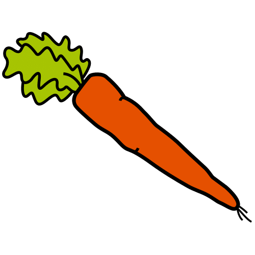
La zanahoria es una raíz.
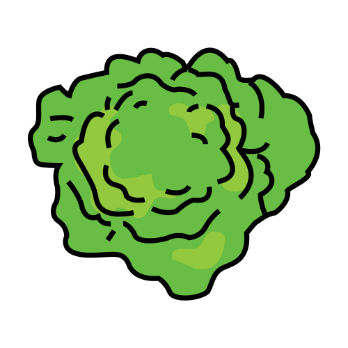
La lechuga es una hoja.
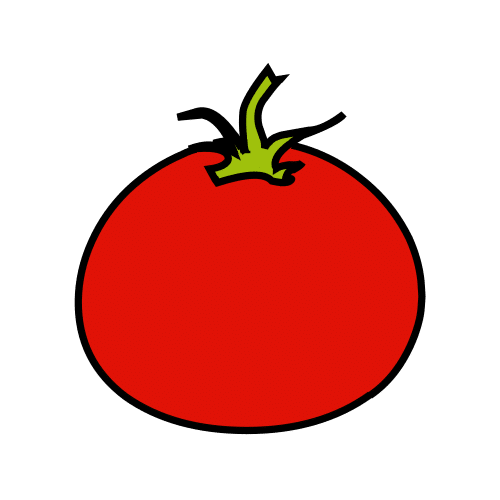
El tomate es un fruto.
Dejad que os ayude a lavar la fruta o a pelar un plátano. Para el almuerzo, la fruta entera y el agua son una buena
elección. Si os apetece, poned una lenteja en un algodón húmedo y mirad juntos cómo brota. Es para mirar: no se come.
Mensaje del cole
✂ Para devolver al cole
Nombre del niño o de la niña:
Puede tocar y comer fruta, verdura y legumbres.
No puede tocar o comer:
Firma de la familia:
Pequeños hortelanos. IdEducando, octubre de 2026. Licencia CC BY-NC-SA 4.0. Los símbolos pictográficos
utilizados son propiedad del Gobierno de Aragón y han sido creados por Sergio Palao para ARASAAC (https://arasaac.org),
que los distribuye bajo Licencia Creative Commons BY-NC-SA.
Imprimible · Todas las sesiones
Tarjetas de la agenda
Recorta por la línea de puntos y pega detrás un círculo de velcro suave. Cada sesión dice qué tarjetas poner en la agenda.
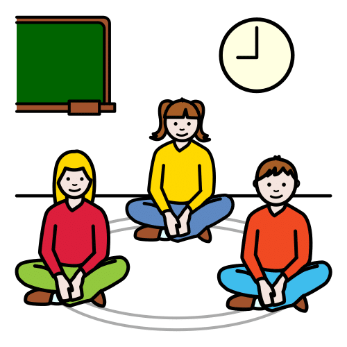
asamblea
semillas
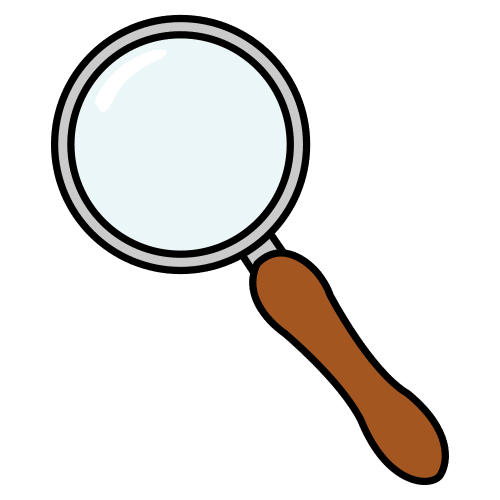
mirar
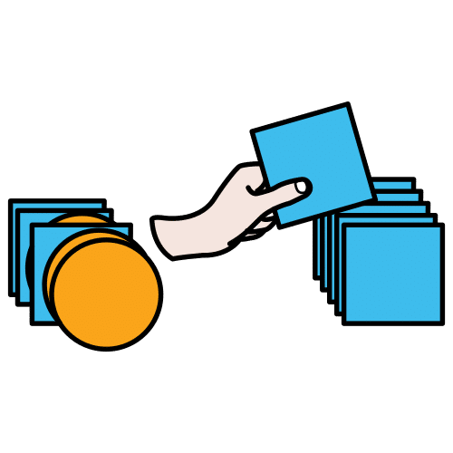
agrupar
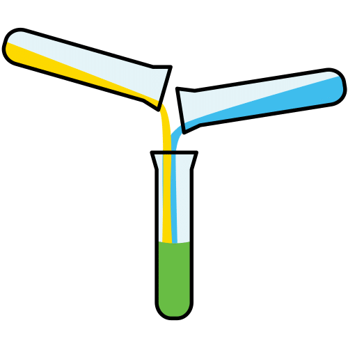
experimento
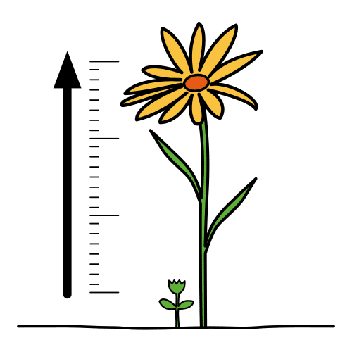
medir
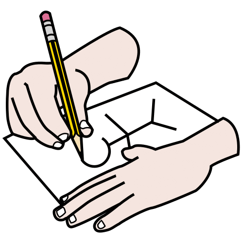
dibujar
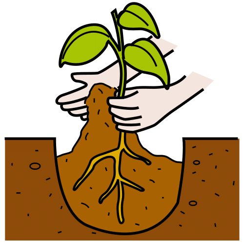
plantar
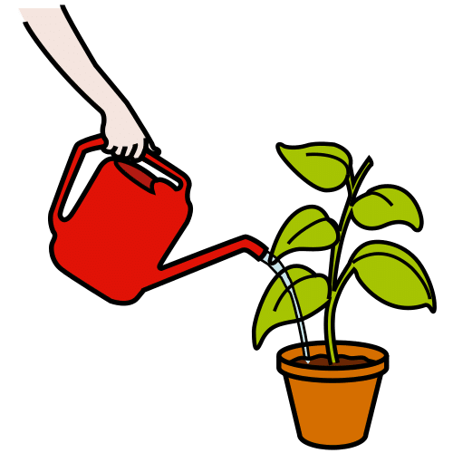
regar
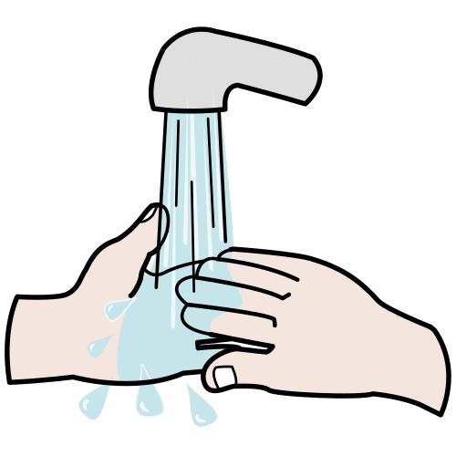
lavar las manos
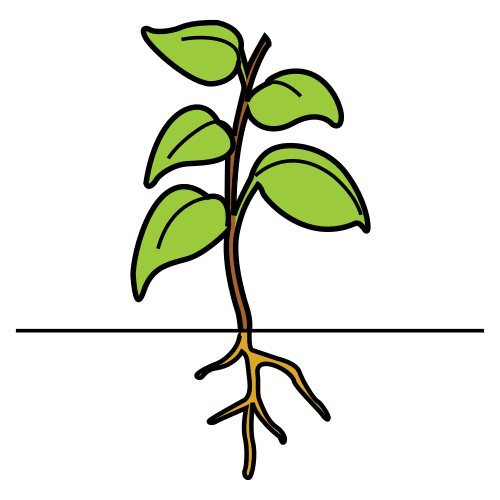
la planta
frutería
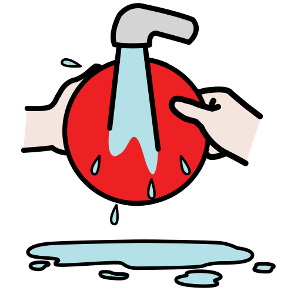
lavar la fruta
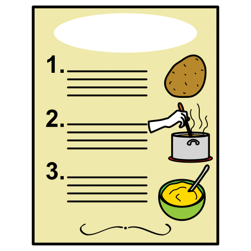
receta
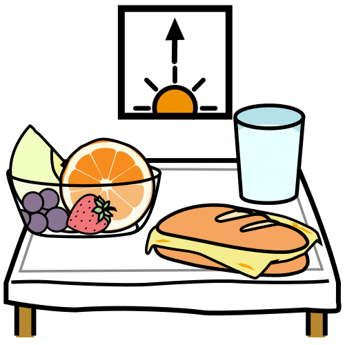
almuerzo
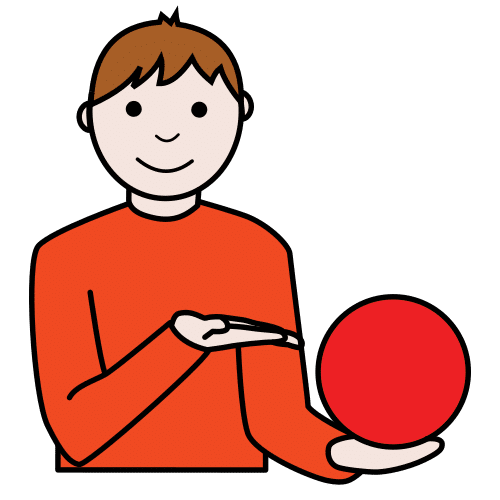
enseñar
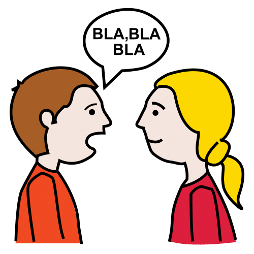
hablar
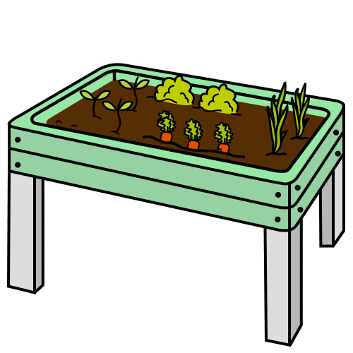
huerto
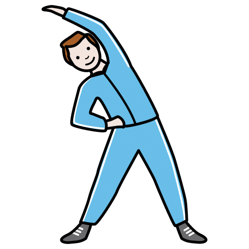
pausa activa
recoger
Imprimible · Sesiones 2 y 3
Hoja de predicciones
Me llamo
Para el adulto: en la sesión 2, lee cada vaso y el niño o la niña rodea «sí» o «no» en «Lo que pienso». En la sesión 3,
rodea lo que ha pasado.
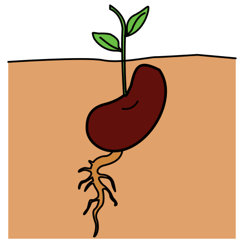
¿Brotará?
Lo que pienso
Lo que ha pasado
1
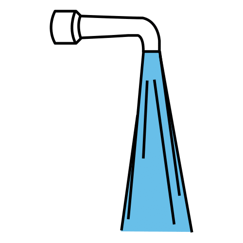
con aguacon luz
síno
síno
2sin aguacon luz
síno
síno
3con agua
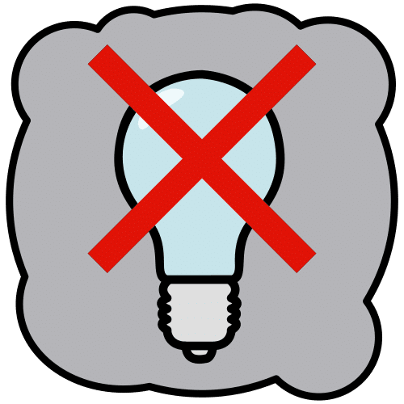
a oscuras
síno
síno
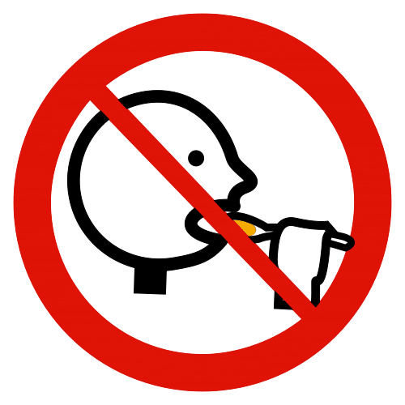
Los vasos son para mirar. No se comen.
Imprimible · Sesiones 3 a 8 · Diario del huerto
Mi diario del huerto
Me llamo
Dibuja aquí tu planta.
Imprimible · Diario del huerto · Fotocopia esta hoja tantas veces como necesites
Imprimible · Sesión 4
Así plantamos
Imprime dos copias: una entera, como cartel, y otra recortada en tarjetas para ordenar los pasos.
1
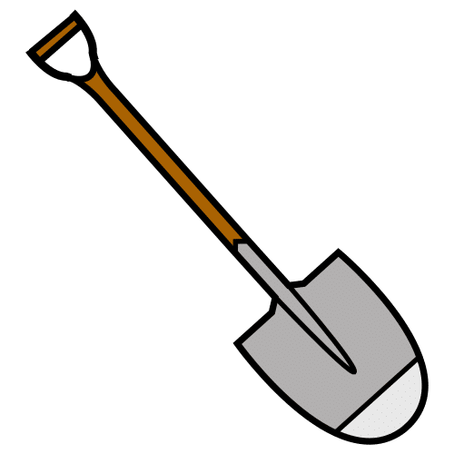
Llena la maceta de tierra.
2
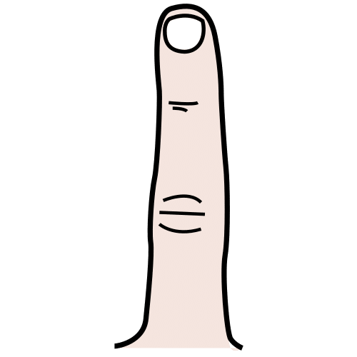
Haz un agujero con el dedo.
3
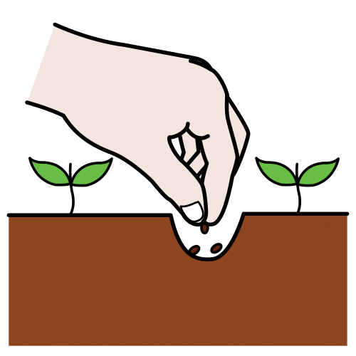
Mete la plantita o la semilla.
4
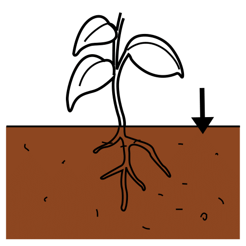
Tapa con tierra y aprieta suave.
5
Riega un poco.
6
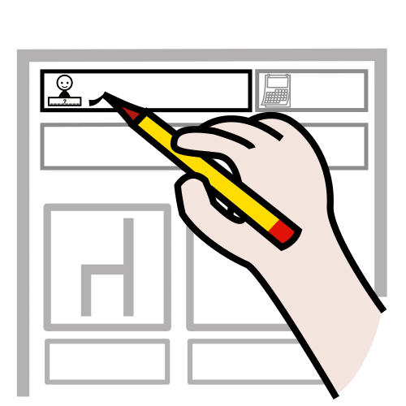
Escribe tu nombre en el cartel.
7
Lávate las manos con jabón.
8
¡Ya está! Ahora la cuidamos.
Imprimible · Sesión 4
Carteles para las macetas
Recorta, escribid los nombres, forra cada cartel con cinta adhesiva y pégalo a un palo de helado. En los blancos, dibujad la
planta y escribid su nombre.
Soy una lechuga.
Me cuidan:
Plantada el día ____________
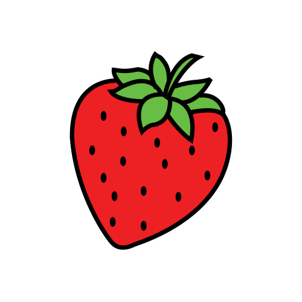
Soy una fresa.
Me cuidan:
Plantada el día ____________
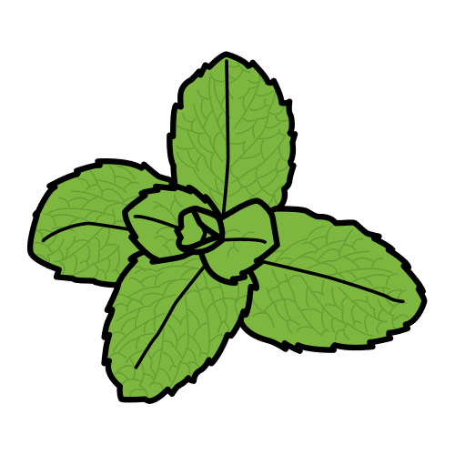
Soy hierbabuena.
Me cuidan:
Plantada el día ____________
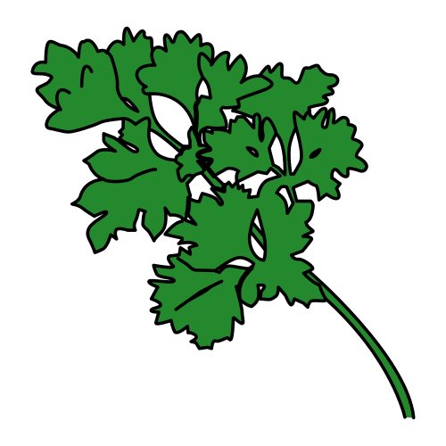
Soy perejil.
Me cuidan:
Plantado el día ____________
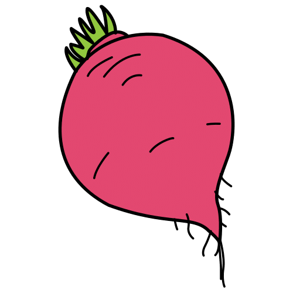
Soy un rábano.
Me cuidan:
Plantado el día ____________
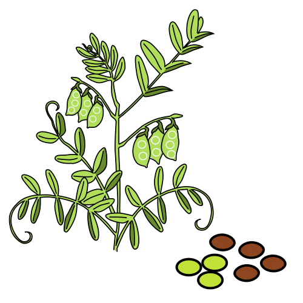
Soy una lenteja.
Me cuidan:
Para mirar: no se come.
Dibuja la planta
Soy
Me cuidan:
Plantada el día ____________
Dibuja la planta
Soy
Me cuidan:
Plantada el día ____________
Imprimible · Sesión 5
¿Qué parte de la planta me como?
Recorta por la línea de puntos. Arriba, las partes de la planta; abajo, los alimentos para emparejar.
Las partes de la planta
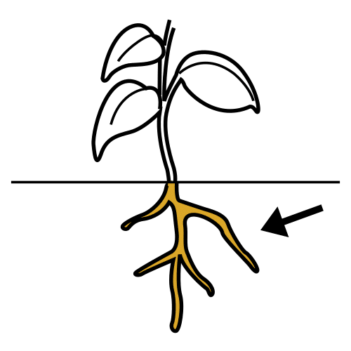
raíz
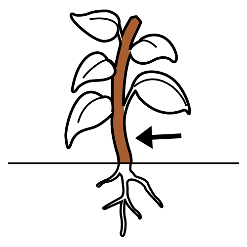
tallo
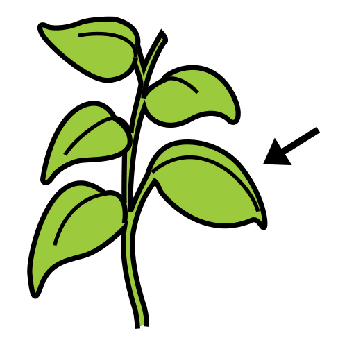
hoja
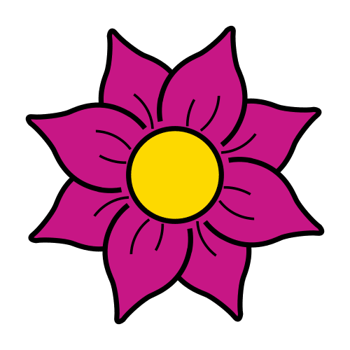
flor
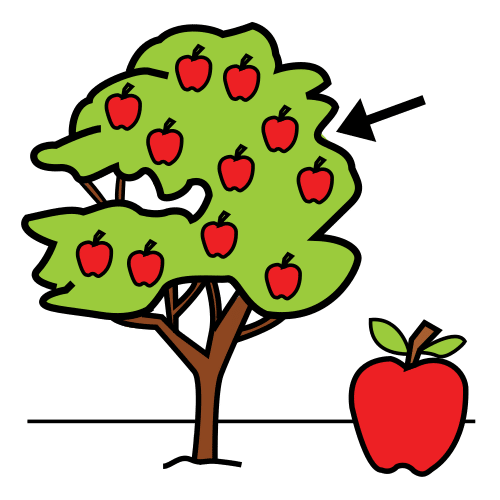
fruto
semilla
¿Qué parte es?
zanahoria
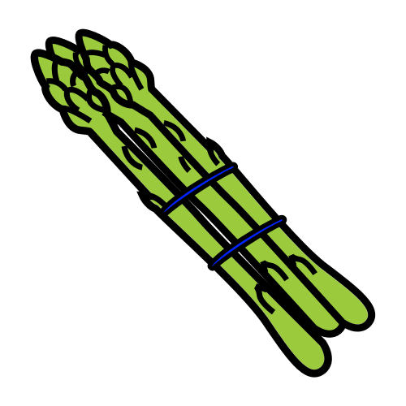
espárragos
lechuga
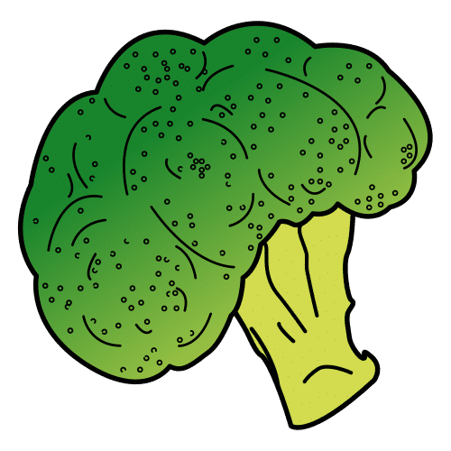
brócoli
tomate
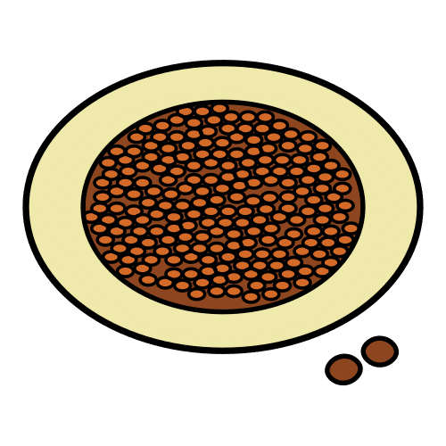
lentejas
Imprimible · Sesión 6
Fichas de la frutería
Imprime esta hoja dos veces en cartulina y recorta por la línea de puntos: 70 fichas. Cada ficha vale 1. También sirven los
tapones o las fichas de colores de clase.
Imprimible · Sesión 6
Precios y lista de la compra
Recorta por la línea de puntos. Pon un precio junto a cada fruta de la tienda y da a cada cliente una tarjeta de la compra.
Precios
Lista de la compra
2
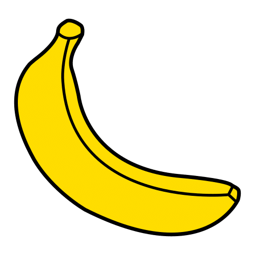
plátanos
3fresas
1
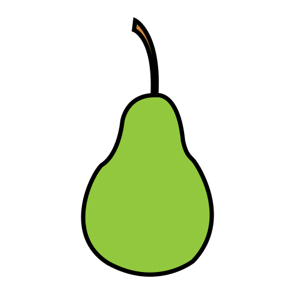
pera
2kiwis
1mandarina
1lechuga
2tomates
3zanahorias
Imprimible · Sesión 7 · Cartel
Macedonia en vaso
Necesitamos
plátano
pera
kiwi
fresa
mandarina
vaso
cuchara
cuchillo de punta redonda
Pasos
1
Lávate las manos.
2
Lava la fruta.
3
Pela el plátano y la mandarina.
4
Corta la fruta en trozos pequeños.
5
Ponla en el vaso y mezcla.
6
A comer, sentados y con calma.
Para el adulto: solo fruta blanda para el alumnado. Pela tú el kiwi y corta lo duro; las uvas, peladas, sin semillas y en
cuatro trozos a lo largo. Nada de frutos secos. Antes, repasa las alergias.
Imprimible · Sesión 8 y después
¿Quién cuida el huerto esta semana?
Plastifícalo y escribe con rotulador de pizarra el nombre de cada niño o niña en el día que elige. Se borra con un paño.
Tarea
L
M
X
J
V
Toco la tierra. Si está seca, riego.
Mido la planta.
Dibujo en el diario.
Quito las hojas secas.
Imprimible · Sesión 8
Mi autoevaluación
Me llamo
Para el adulto: lee cada frase. El niño o la niña rodea o colorea una respuesta en cada fila.
Lo he hecho yo
Con ayuda
Quiero practicar más
Cuido mi planta.
Miro, mido y dibujo.
Preparo la receta.
Cuento lo que sé.
Fuentes y créditos
De dónde sale cada cosa
Pequeños hortelanos: situación de aprendizaje para 4 años, con DUA y multinivel. IdEducando, octubre de
2026. [BORRADOR] Pendiente de revisión por el equipo docente. Ficha y novedades:
ideducando.es/material-gratuito/situacion-aprendizaje-4-anos-huerto
Currículo y oposición
Decreto n.º 196/2022, de 3 de noviembre, por el que se establece la ordenación y el currículo de la etapa de Educación
Infantil en la Comunidad Autónoma de la Región de Murcia. BORM n.º 255, de 4 de noviembre de 2022: art. 4.6 (pág. 33056),
art. 7 (págs. 33057 y 33058), art. 14 y 16 (pág. 33060), art. 17.3 (pág. 33061), anexo I (pág. 33068), competencias,
criterios y saberes de las tres áreas (págs. 33078 a 33110) y anexo III (pág. 33111).
BORM n.º 18, de 23 de enero de 2026, anexo XVII, «Cuerpo de Maestros. 597031 - Educación Infantil», págs. 1720 a 1724.
Diseño Universal para el Aprendizaje y enseñanza multinivel
CAST (2024). Pautas para el Diseño Universal para el Aprendizaje, versión 3.0. udlguidelines.cast.org/es
Collicott, J. (1991). Implementing multi-level instruction: Strategies for classroom teachers. En G. L. Porter y D.
Richler (Eds.), Changing Canadian Schools: Perspectives on disability and inclusion (pp. 191-218). Roeher
Institute.
Inclusive Schools Network (2011). Using multi-level instruction for a classroom of diverse learners. inclusiveschools.org
Alimentación, seguridad y plantas
Agencia Española de Seguridad Alimentaria y Nutrición (AESAN) (2022). Recomendaciones dietéticas saludables y
sostenibles complementadas con recomendaciones de actividad física para la población española: fruta y hortalizas
cada día y fruta entera mejor que zumo (pág. 4), evitar los frutos secos en menores de 5 años por el riesgo de asfixia
(pág. 7), el agua como bebida (pág. 11) y fruta de temporada y de proximidad (pág. 17).
Asociación Española de Pediatría (AEP), Comité de Soporte Vital (diciembre de 2025). Nota de prensa sobre la prevención
de atragantamientos en menores de 5 años: uvas peladas, sin semillas y en cuatro trozos a lo largo; comer sentado y con
un adulto. aeped.es/actualidad/atragantamientos-navidad
AEP, En Familia (24 de noviembre de 2025). 5 verdades y 5 mitos sobre los atragantamientos: zanahoria y manzana
crudas, duras hasta los 3 a 6 años; frutas pequeñas en cuartos o en tiras. aeped.es/enfamilia
Kimball, J. W. Biología, apartados 16.4B «Germinación de semillas» y 16.4C «Etiolación». LibreTexts Español,
licencia CC BY 3.0: la semilla siempre necesita agua para germinar; a oscuras, la planta crece pálida y alargada.
Armarego-Marriott, T., Sandoval-Ibañez, O. y Kowalewska, Ł. (2020). Beyond the darkness: recent lessons from etiolation
and de-etiolation studies. Journal of Experimental Botany, 71(4), 1215-1225.
Instituto Nacional de Toxicología y Ciencias Forenses. Servicio de Información Toxicológica: 91 562 04 20, las 24 horas.
Kit de bienvenida: ideducando.es/material-gratuito/kit-bienvenida-alumnado-recien-llegado
Pictogramas y licencia
Pictogramas: «Los símbolos pictográficos utilizados son propiedad del Gobierno de Aragón y han sido creados por Sergio
Palao para ARASAAC (https://arasaac.org), que los distribuye bajo Licencia Creative Commons BY-NC-SA». Si adaptas el
material, mantén este texto. Con pictogramas de ARASAAC, el material no se puede vender. El camino de la portada, las
fichas de la frutería y los cuadros del diario son de IdEducando.
Licencia CC BY-NC-SA 4.0: puedes copiarlo y adaptarlo citando a IdEducando, sin fines comerciales y con la misma licencia.
 Con ayuda
Con ayuda
 sí
sí no
no